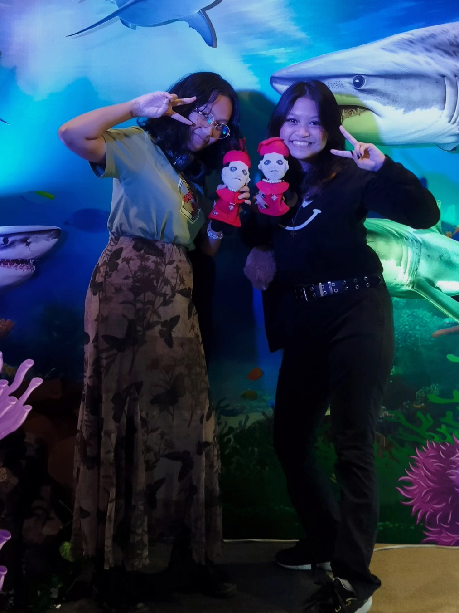
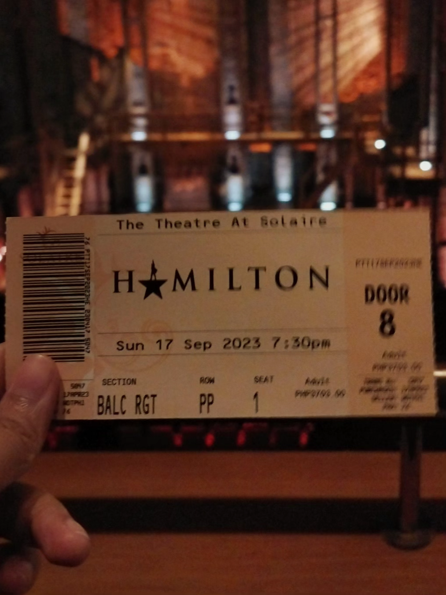
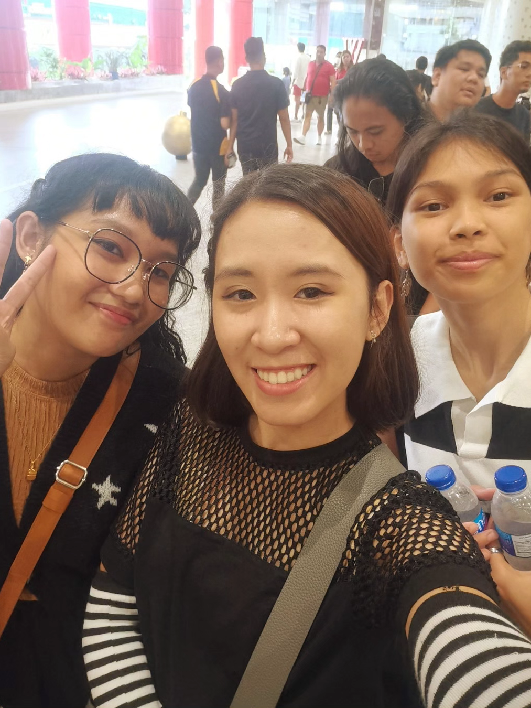
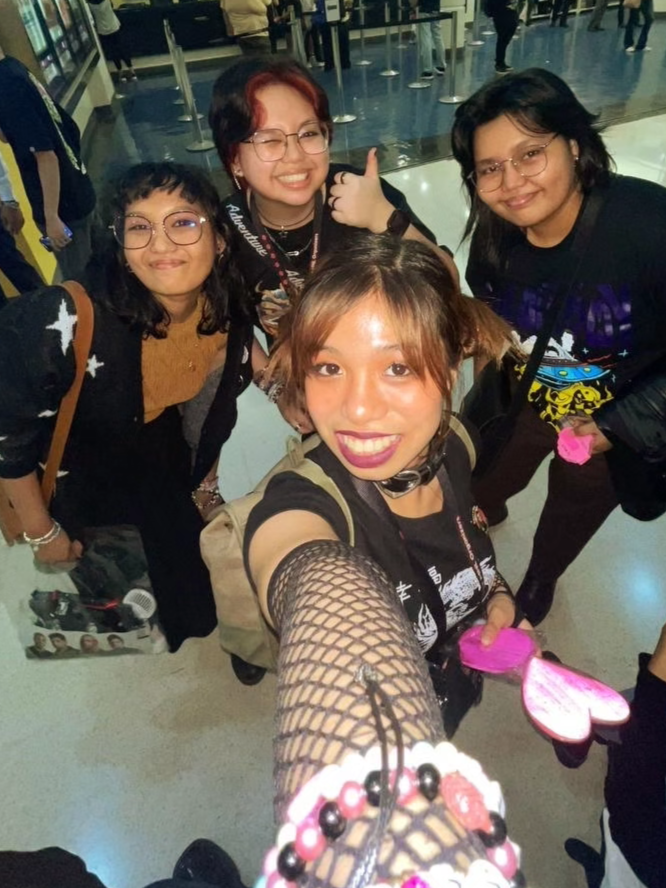
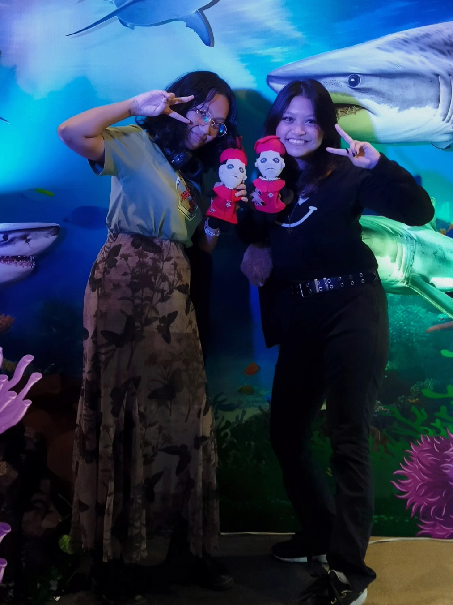
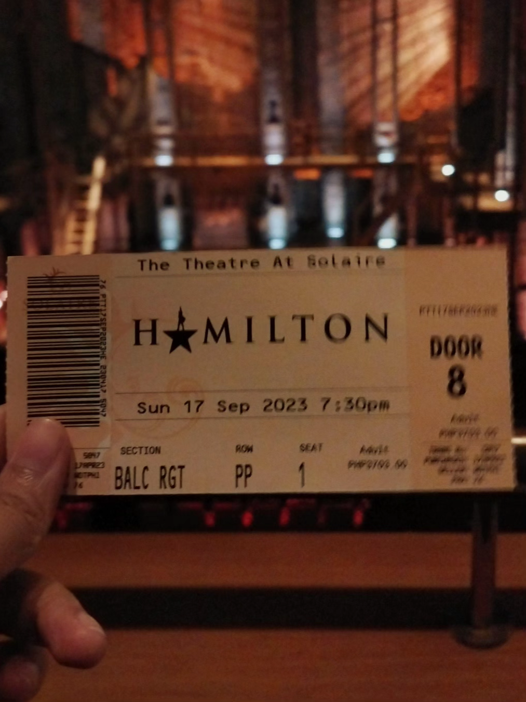
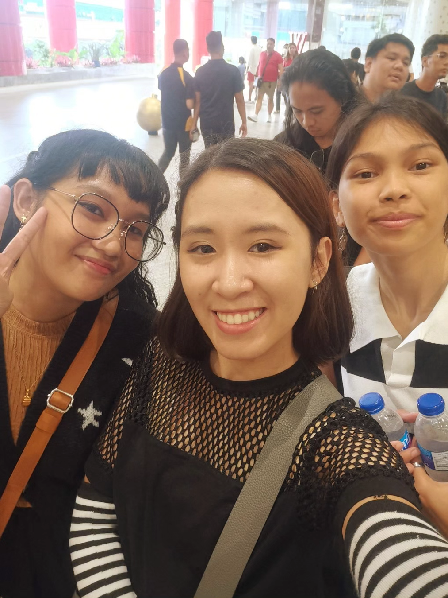
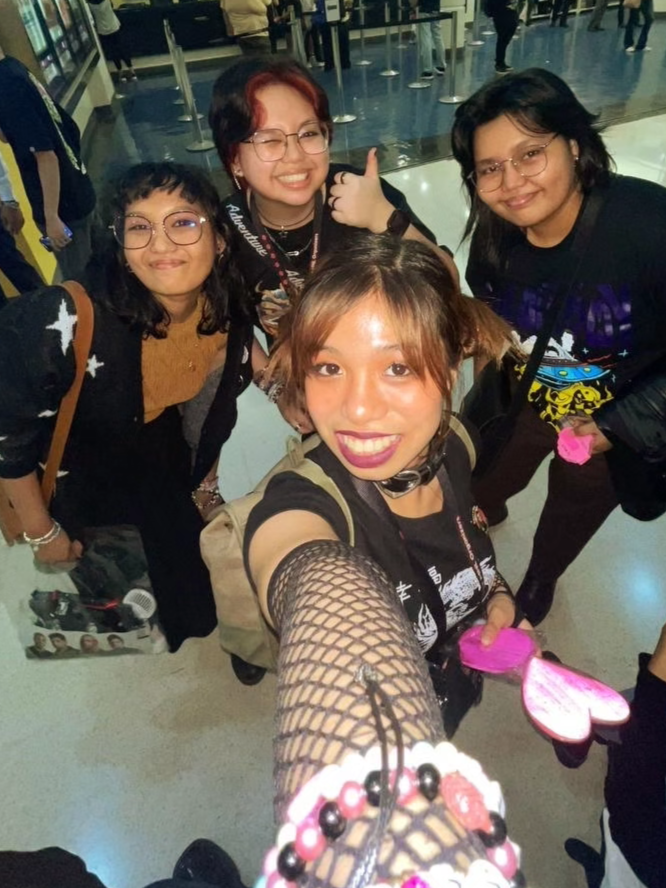

ENTRY NO. 1
"I've got a lot on my mind. And well... in it."
Another year has passed, I would say it was a bit awful yet a very interesting year for me since there are a lot of things that just happened. Some may be memorable in a good or bad way. I just ruined my sleep schedule and mental health pretty much the whole span of the year. I had a lot on my mind this year, I planned to try and fix myself next year and give a bit of time for my hobbies. Yet, I am excited and a bit scared of what the future will offer to me. All's well that ends, not as bad as it could have! I haven't thought much about what would I be in five years. All I know is I have to keep on moving forward just to survive. I thought about entering the IT industry to earn money for a bit and while doing that I would get part-time jobs in the art industry. I enjoy arts and designing websites. I think it's the only thing I'm best at in the industry. Although, I also want to be a game developer so it could be a job I'll be in the future. But it's just an expected outcome for me. Who knows, maybe I might make a turn on arts or do something very different from what I planned. I hope it gets well!

 






